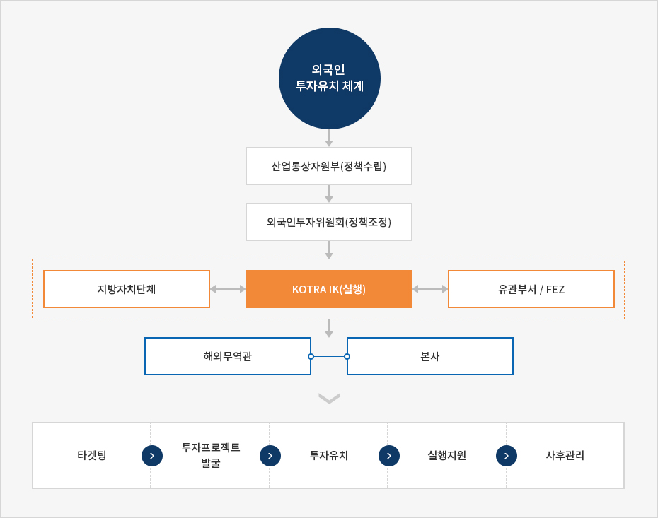

Invest Korea
- Home
- IK 서비스
- IK 소개
- Invest Korea
Invest KOREA
외국기업의 성공적인 국내진출을 지원하기 위하여 KOTRA(대한무역투자진흥공사) 내에 설립된 국가투자유치기관입니다.Invest KOREA는 우리나라의 투자환경을 해외에 홍보하는 역할을 수행하며, 외국기업을 대상으로 투자상담에서부터 투자신고, 기업설립, 국내에서의 사업활동지원 및 경영애로사항 해결 등의 포괄적인 서비스를 제공합니다.
한국의 외국인직접투자 유치 시스템
외국인투자 분야에 풍부한 지식과 경험을 보유한 KOTRA 직원들과 전문가 그룹, 정부 관련부처 및 기관에서 파견된 공무원, 여러 분야의 민간전문가들로 구성되어 있으며, 36개의 KOTRA 해외 투자거점무역관(Korea Business Center)과 긴밀한 업무 협조체제를 갖추고 있습니다.
Invest KOREA는 외국인투자위원회(Foreign Investment Committee)와 산업통상자원부가 수립한 외국인 투자관련 정부정책을 수행합니다.


외국인 투자유치 체계
- 산업통산자원부(정책수립)
- 외국인투자위원회(정책조정)
- 지방자치단체 ↔ KOTRA IK(실행) ↔ 유관부서/FEZ
- 해외무역관, 본사
-
- 타겟팅
- 투자프로젝트 발굴
- 투자유치
- 실행지원
- 사후관리

투자거점무역관
Invest KOREA는 해외투자유치 업무 활성화를 위하여 36개 무역관 64명의 투자유치전담관을 배치하고 있습니다. 해외 투자거점무역관은 해외 잠재투자가와의 접점 창구로 잠재투자가를 대상으로 한국 투자관련 정보를 제공하고 국가 IR 개최 등의 투자유치활동을 전개합니다.
연혁
-
2015
- 1월 - 외국기업 고충처리단을 외국인 투자옴부즈만의 직할체제로 변경
-
2012
- 2월 - 옴부즈만 직할 조직으로 종합행정지원센터 편성
-
2010
- 8월 - Invest KOREA의 미션에 연구부문 추가
-
2009
- 세계은행 산하 외국인투자자문기관인 FIAS(Foreign Investment Advisory Service)에서 투자유치 홈페이지 우수사례(APEC 국가 중 1위)로 선정
-
2006
- 11월 - 외국기업 창업지원연구센터인 인베스트 코리아 플라자 (Invest Korea Plaza)개관
-
2003
- 12월 - 외국인투자센터 → Invest KOREA로 재 출범
-
1999
- 10월 - 옴부즈만 사무소 개설
-
1998
- 7월 - KOTRA내 외국인투자지원 센터 (Korea Investment Service Center)설립
- 4월 - 정부, KOTRA를 한국의 국가투자 유치전담기구로 지정
-
1995
- 8월 - KOTRA에 외국인투자유치 지원기능 추가